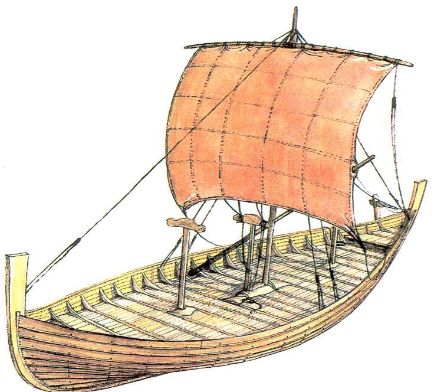

Епоха вікінгів
Епоха вікінгів
 Кнор
Кнор
Кнор (норв. knörr) — один з типів дерев'яних кораблів вікінгів.
Для спорудження кнорів використовувалися сосна та ясен, рідше дуб. У рух кнор приводився веслами або прямим рейовим вітрилом і управлявся кормовим весловим кермом. Корпус кнора типовий для судів скандинавської побудови: його відрізняють розвал бортів, високо підняті штевні з прикрасами, в палубі — квадратний виріз люка трюму.
Багато в чому кнори були схожі з дракарами, однак, на відміну від них, були не військовими, а швидше вантажними і торговими суднами, і використовувалися для перевезення більшої кількості припасів та спорядження, а також коней. Тому кнори були ширшими і мали більшу осадку, але при цьому розвивали меншу в порівнянні з дракарами швидкість.
Завдяки тому, що кнори могли вмістити більше припасів, ніж дракари, їх використовували для далеких походів. Наприклад, Ерік Рудий, засуджений до вигнання за вбивство, вирушив у похід на кнорі і відкрив Ґренландію.
музей кораблів вікінгів (Норвегія, Осло)
Частина Музею історії культури Осло, улюблений музей норвежців. У 1913 році було задумано збудувати окреме приміщення для трьох драккар, виявлених в різні роки, які до цього зберігалися в приміщеннях Університету Осло. Першим, в 1926 році, в нове приміщення було перенесено Осебергскій корабель. У 1932 році відкрилися інші два зали, які зайняли Гокстадскій і Тюнскій кораблі. А до 1957 року побудовано ще одне приміщення, де були представлені предмети, виявлені разом з суднами, - кухонне начиння, санки, предмети одягу, зброї і броні. Музей кораблів вікінгів Норвегії знаходиться на півострові Бюгде. Потрапити туди можна на автобусі або поромі. Оскільки тут всього чотири зали, обійти його повністю багато часу не займе. Однак подивитися там є на що. На території Музею кораблів Норвегії є справжня верф, де відтворюються давні скандинавські човни і драккари. А поруч з будівлею стоїть пам'ятник подружжю Хельге Маркусу і Анне-Стін Інгстад - дослідникам, які довели, що вікінги відвідали Америку раніше Колумба.